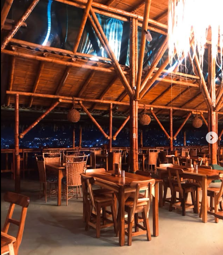

¿Listo un viaje gastronómico?

La Pastora
⭐⭐⭐⭐⭐
Restaurante campestre con comida típica y hermosas vistas, perfecto para relajarse en la naturaleza.
Ir
Ke Sano! De la Huerta a la Mesa
⭐⭐⭐⭐⭐
Restaurante vegetariano con productos frescos de su huerta, ideal para comer saludable en un ambiente tranquilo.
Ir
Yarumo Blanco
⭐⭐⭐⭐⭐
Cocina tradicional con ingredientes orgánicos, atendido por mujeres locales en un entorno natural junto al río Otún.
Ir